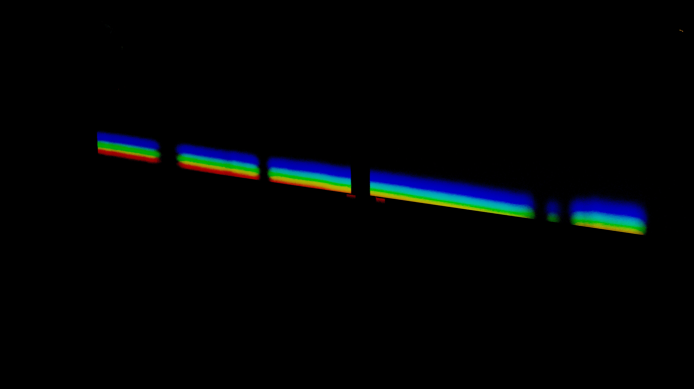

This is the image of a rainbow reflecting on one of the tables in the 7th-floor library at Hunter College. I took this picture simply because rainbows are known as a form of beauty in this world. I changed the picture to highlight the rainbow in the picture and dull the rest of the surroundings. To do this, I changed the Vibrance to 20, the Offset to -0.2306 and the Gamma to 2.63. This created a dark background with only the rainbow in the spotlight:
